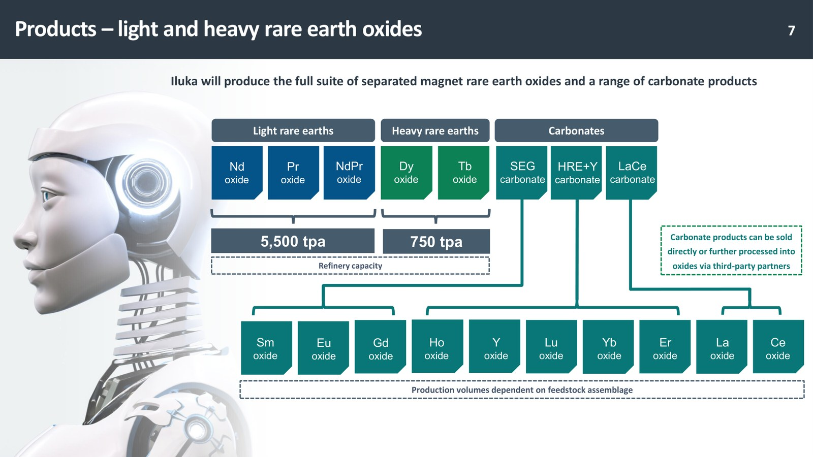
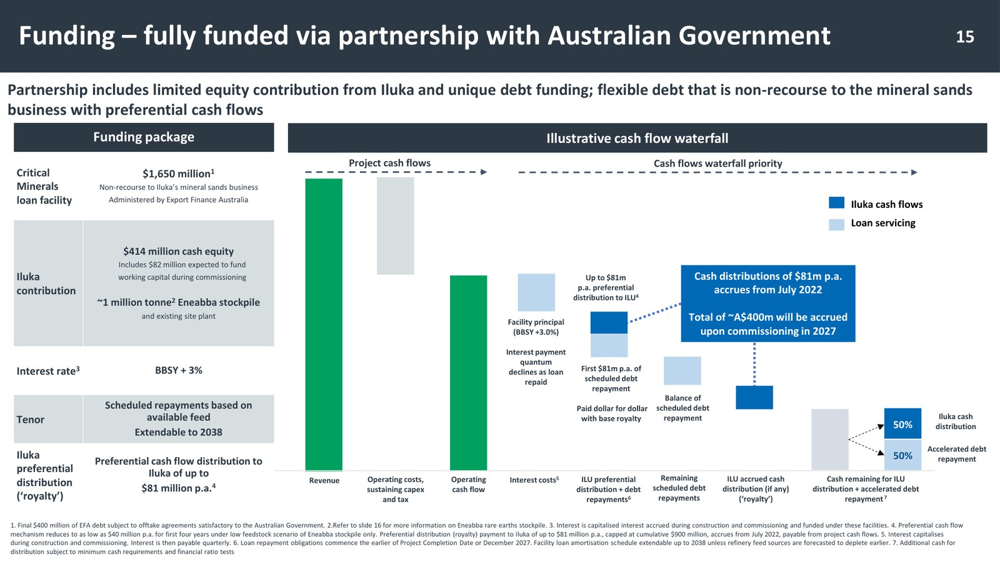
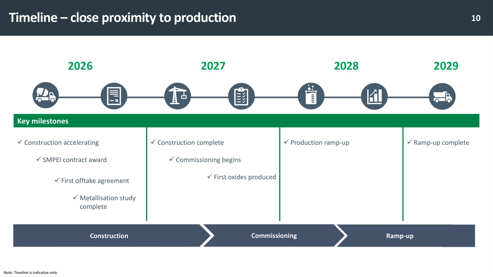

ILUKA RESOURCES 🇦🇺 (ASX:ILU)
Model biznesowy w obrazach

Pełny wachlarz separowanych tlenków ziem rzadkich (lekkie i ciężkie) oraz węglany; moc rafinacji 5 500 tpa i 750 tpa. Źródło: Iluka Resources, prezentacja inwestorska (maj 2026).

Model finansowania: pakiet w pełni pokrywający budowę, oparty na nieregresowym długu rządu Australii, z ilustracją kaskady przepływów. Źródło: Iluka Resources, prezentacja inwestorska (maj 2026).

Harmonogram do produkcji 2026-2029: budowa, uruchomienie i ramp-up rafinerii Eneabba. Źródło: Iluka Resources, prezentacja inwestorska (maj 2026).
W kontekście: Wydobycie (upstream)
Czym jest spółka. Iluka Resources jest australijskim producentem piasków mineralnych - cyrkonu, rutylu, rutylu syntetycznego i ilmenitu - który rozbudowuje działalność o zintegrowany łańcuch REE. W odróżnieniu od spółek eksploatujących dedykowane kopalnie ziem rzadkich Iluka odzyskuje monacyt jako współprodukt separacji piasków mineralnych. Łańcuch ma prowadzić od wydobycia i koncentracji surowca, przez separację minerałów, do produkcji oczyszczonych tlenków, ale nie do wytwarzania magnesów.
Punktem wyjścia jest Eneabba. Spółka zgromadziła tam około 1 mln t koncentratu bogatego w lekkie i ciężkie ziemie rzadkie. Produkt koncentratora zawiera około 90% koncentratu monacytowego, co pozwala zasilać rafinerię materiałem już wydobytym i skoncentrowanym. Iluka przedstawia Eneabba jako operację o najwyższej jakości ziem rzadkich na świecie, ale jest to twierdzenie marketingowe spółki, a nie porównanie oparte na ujawnionym zestawieniu parametrów wszystkich złóż.
Długoterminowym zapleczem surowcowym ma być także Wimmera. Zasób WIM100 został podniesiony do 540 mln t i ma wspierać przyszłe dostawy feedstocku do Eneabba. W materiałach spółki jako potencjalne źródło surowca pojawia się również Balranald. Precyzyjna wielkość zasobów lub rezerw REE wyrażona w tonach TREO według raportowania JORC jest jednak NIE UJAWNIONA w dostarczonych fragmentach raportu.
Ekonomiczna jakość surowca nie zależy wyłącznie od całkowitej zawartości ziem rzadkich. Ponad 80% wartości tlenków w materiale Iluki ma pochodzić z neodymu, prazeodymu, dysprozu i terbu. Są to pierwiastki odpowiadające planowanemu portfelowi produktów magnetycznych, w tym NdPr oraz ciężkim tlenkom Dy/Tb.
Znaczenie biznesowe: zgromadzony koncentrat i współproduktowy charakter REE ograniczają potrzebę natychmiastowego uruchamiania dedykowanej kopalni ziem rzadkich, lecz ciągłość działalności po wykorzystaniu zapasu będzie zależała od skutecznego wprowadzenia kolejnych źródeł feedstocku.
Dla inwestora: przewaga surowcowa jest widoczna jakościowo, ale jej pełna ocena wymaga danych JORC o zawartości TREO, odzyskach i rezerwach, których dokładna wielkość jest NIE UJAWNIONA.
W kontekście: Separacja, rafinacja i metalurgia
Eneabba ma zmienić miejsce Iluki w łańcuchu wartości. Dotychczasowa działalność opiera się na wydobyciu i separacji piasków mineralnych. Budowana rafineria ma dodać chemiczną separację poszczególnych ziem rzadkich i produkcję tlenków o parametrach wymaganych przez odbiorców przemysłowych. Ostateczna decyzja inwestycyjna, czyli FID, została zatwierdzona w kwietniu 2022 r.
Docelowa moc zakładu wynosi do 23 000 t/rok TREO, w tym do 5 500 t/rok tlenku NdPr oraz do 750 t/rok tlenków Dy/Tb. Portfel ma zatem obejmować zarówno lekkie, jak i ciężkie, separowane tlenki ziem rzadkich. Iluka nie planuje produkcji samych magnesów - jej miejscem w łańcuchu ma być etap pomiędzy koncentratem mineralnym a materiałem tlenkowym wykorzystywanym dalej przez producentów metali, stopów i magnesów.
W połowie 2026 r. budowa była ukończona w ponad 50%. Uruchomienie instalacji jest planowane na połowę 2027 r., a komercyjne zwiększanie produkcji, czyli ramp-up, ma trwać do 2028 r.. Oznacza to, że moce nominalne nie są jeszcze mocami działającymi, a przejście od budowy do stabilnej produkcji pozostaje osobnym etapem ryzyka technicznego i operacyjnego.
Projekt wykorzystuje konstrukcję zero-liquid discharge, pozwalającą odzyskiwać wodę i odczynniki zamiast odprowadzać płynne odpady. Może to ograniczać zużycie zasobów i ekspozycję środowiskową, ale koszt operacyjny produkcji tlenków, w tym koszt w przeliczeniu na kilogram NdPr, jest NIE UJAWNIONY.
Znaczenie biznesowe: Eneabba ma przesunąć Ilukę z roli dostawcy minerałów do roli producenta separowanych tlenków, lecz przed osiągnięciem tej pozycji spółka musi ukończyć budowę, uruchomić proces chemiczny i ustabilizować jakość produktów.
Dla inwestora: moc nominalna opisuje skalę docelową, nie obecną produkcję, dlatego kluczowe analitycznie są postęp budowy, commissioning i tempo ramp-upu do 2028 r.
W kontekście: Dywersyfikacja i budowa łańcucha poza Chinami
Znaczenie Eneabba wynika z koncentracji rynku. Chiny kontrolują około 90% globalnych mocy przerobowych i rafinacyjnych REE oraz nieomal 100% światowej produkcji ciężkich tlenków ziem rzadkich. Poza Chinami jedynie Lynas Rare Earths i MP Materials są wskazywane jako obecni producenci tlenków klasy magnetycznej. Eneabba ma być jedną z nielicznych rafinerii poza Chinami zdolnych wytwarzać zarówno lekkie, jak i ciężkie separowane tlenki.
Iluka buduje australijski ciąg technologiczny oparty na lokalnym zapasie monacytu, przyszłym surowcu z własnych projektów i docelowej separacji chemicznej w Eneabba. Nie będzie to jednak kompletny łańcuch od kopalni do gotowego magnesu. Brakuje ujawnionego etapu produkcji metali, stopów i magnesów, więc odbiorcy tlenków nadal będą musieli korzystać z dalszego przetwarzania.
Projekt ma wyraźny wymiar polityki przemysłowej. Rząd Australii zapewnił 1,65 mld AUD finansowania non-recourse w ramach Critical Minerals Facility. Jest to finansowanie projektu, w którym ryzyko kredytowe ma być ograniczone do Eneabba, a nie ogólne dokapitalizowanie całej grupy.
Potencjalne znaczenie podażowe należy oddzielić od obecnego udziału rynkowego. Iluka jeszcze nie produkuje operacyjnie tlenków REE, dlatego jej bieżący udział w globalnej produkcji wynosi NIE UJAWNIONE. Źródła wtórne przypisują łącznie Lynas, MP Materials i Iluce 25-33% podaży REE spoza Chin w 2026 r., lecz definicja tej miary i uwzględnienie Iluki przed uruchomieniem Eneabba ograniczają jej porównywalność.
Znaczenie biznesowe: Eneabba może dodać do zachodniego łańcucha rzadką zdolność separacji lekkich i ciężkich tlenków, ale nie usuwa brakujących etapów pomiędzy tlenkiem a gotowym magnesem.
Dla inwestora: warto rozdzielać strategiczne znaczenie projektu od obecnego udziału rynkowego - pierwsze jest wysokie jakościowo, drugie pozostaje NIE UJAWNIONE przed rozpoczęciem produkcji.
Ekspozycja na REE w liczbach
Bieżące wyniki pochodzą z piasków mineralnych, nie z REE. Przychód Mineral Sands w FY2025 wyniósł 976 mln AUD, wobec 1 129 mln AUD wcześniej, co oznacza spadek o 13,5% r/r. Przychód segmentu Rare Earths był NIE UJAWNIONY - segment pozostaje przed rozpoczęciem produkcji i raportuje przede wszystkim nakłady oraz zadłużenie. Udział REE w ujawnionym przychodzie operacyjnym jest zatem NIE UJAWNIONY.
Bazowy EBITDA Mineral Sands wyniósł 300 mln AUD, przy marży 31%, i spadł o 37,2% r/r. Bazowy EBITDA całej grupy wyniósł 329,3 mln AUD. Jednocześnie grupowy EBIT wyniósł -385,7 mln AUD, a NPAT zamknął się stratą -288,4 mln AUD, wobec zysku 231,3 mln AUD w FY2024. Na wynik wpłynęły wyjątkowe odpisy przed opodatkowaniem o wartości około 565 mln AUD.
Eneabba intensywnie zużywa kapitał. Capex projektu w FY2025 wyniósł 443 mln AUD, a łączne wydatki do końca okresu sięgnęły 865 mln AUD. Całkowity szacunek kosztu wynosi 1,7-1,8 mld AUD. Wkład własny Iluki w przedsięwzięcie wynosi 200 mln AUD, a wykorzystane saldo pożyczki EFA wyniosło 610 mln AUD.
Segment Rare Earths wykazywał na koniec FY2025 -583,6 mln AUD długu netto non-recourse. Kwota ta nie jest tożsama z wykorzystanym saldem EFA - raport prezentuje różne miary finansowania i zadłużenia projektu.
Operacyjne przepływy pieniężne grupy wyniosły 61 mln AUD, po spadku o 75,8%, natomiast wolne przepływy pieniężne wyniosły -888 mln AUD. Oczekiwane potrzeby gotówkowe w 2026 r. to około 665 mln AUD, o 48% mniej niż w 2025 r.. Stan gotówki na koniec okresu jest NIE UJAWNIONY w dostarczonych dowodach.
Produkcja REE. Operacyjna produkcja tlenków jeszcze się nie rozpoczęła. Faktyczny wolumen TREO, NdPr i Dy/Tb w FY2025 jest NIE UJAWNIONY. Iluka nie jest producentem magnesów, a produkcja magnesów jest NIE UJAWNIONA. Docelowe moce pozostają na poziomie do 23 000 t/rok TREO, w tym 5 500 t/rok NdPr i 750 t/rok Dy/Tb.
pie title Pokrycie planowanej produkcji REE wiążącym offtake "Objęte ujawnioną umową": 10 "Bez ujawnionej wiążącej umowy": 90
Źródło: komunikat Iluki o pierwszej wiążącej umowie odbiorczej z czerwca 2026 r.
Znaczenie biznesowe: obecna działalność piasków mineralnych finansuje grupę w okresie, gdy Eneabba generuje duże nakłady, ale nie generuje jeszcze przychodów operacyjnych.
Dla inwestora: wyniki grupy i ekonomika REE pozostają na razie rozdzielone - historia przychodów dotyczy piasków mineralnych, natomiast REE jest ekspozycją budowlaną, finansową i kontraktową przed ramp-upem.
Kluczowe umowy - co znaczą
Finansowanie rządowe - wiążące i projektowe. Iluka zabezpieczyła 1,65 mld AUD pożyczki non-recourse udzielanej przez Export Finance Australia w ramach rządowego Critical Minerals Facility. Transza o wartości 1,25 mld AUD ma zostać w pełni wykorzystana pod koniec 2026 r., gdy rafineria ma osiągnąć 75% zaawansowania, a pozostałe 400 mln AUD ma finansować ukończenie budowy. Konstrukcja jest wiążąca, ale dostęp do kolejnych środków pozostaje związany z postępem projektu.
Pierwszy wiążący offtake REE. W dniach 22-23 czerwca 2026 r. Iluka zawarła wieloletnią, wiążącą umowę z globalnym producentem samochodów, którego nazwy nie ujawniono. Dostawy mają rozpocząć się w 2028 r., a początkowy okres obowiązywania wynosi 4 lata. Kontrakt obejmuje 1 200 t magnet REO, czyli około 10% planowanej produkcji Iluki w tym okresie.
Umowa wykorzystuje mechanizm take-or-pay obejmujący 90% zakontraktowanego wolumenu. Gwarantowany minimalny przychód wynosi 155 mln USD, natomiast prognozowany przychód przy cenach branżowych wynosi 172 mln USD. Cena ma być ustalana jako wyższa z ceny minimalnej lub ceny powiązanej z rynkiem. Mechanizm ogranicza ryzyko niskich cen dla Iluki, pozostawiając możliwość korzystania ze wzrostu rynku, a klientowi zapewnia wieloletni dostęp do tlenków NdPr, Dy i Tb.
Jest to pierwszy ujawniony klient REE Iluki, ale umowa nie pokrywa całej przyszłej produkcji. Pozostałe 90% planowanego wolumenu nie ma ujawnionej wiążącej umowy odbiorczej. Umowy typu MOU, przedpłaty klientów oraz kolejne wiążące offtake są NIE UJAWNIONE.
Zewnętrzny feedstock - słabsza jakość dowodowa. Agregowane informacje wskazują na umowę z Lindian Resources dotyczącą 6 000 t/rok monacytu przez 15 lat. Osobno strategiczna współpraca z Northern Minerals ma obejmować 30 500 t zawartego TREO w ksenotymie z Browns Range przy początkowym okresie eksploatacji wynoszącym 8 lat. Bez bezpośrednich dokumentów umownych nie należy zrównywać pewności tych dostaw z wiążącym komunikatem giełdowym dotyczącym odbiorcy motoryzacyjnego.
Kontrakty piasków mineralnych jako wsparcie bieżącego biznesu. Przekontraktowane dostawy na 2026 r. obejmują 110 000 t rutylu syntetycznego, 10 000 t rutylu, 12 000 t HyTi i 100 000 t ilmenitu, zapewniając co najmniej 240 mln USD przychodu. Nie są to umowy REE, ale mogą wspierać przepływy z działalności istniejącej podczas budowy Eneabba.
Znaczenie biznesowe: finansowanie rządowe zabezpiecza znaczną część kosztu budowy, a pierwszy offtake potwierdza odbiorcę dla części produkcji, lecz komercjalizacja większości mocy pozostaje otwarta.
Dla inwestora: pożyczka EFA, take-or-pay i cena minimalna są twardszymi zabezpieczeniami niż MOU, natomiast słabiej udokumentowane umowy feedstockowe wymagają potwierdzenia w źródłach pierwotnych.
Pozycja rynkowa i udziały
Bieżący udział Iluki w rynku REE jest NIE UJAWNIONY, ponieważ rafineria jeszcze nie rozpoczęła produkcji. Ranking spółki według wolumenu tlenków jest również NIE UJAWNIONY. Jej pozycja ma obecnie charakter projektowy - wynika z planowanej skali i zakresu separowanych produktów, a nie z istniejącej sprzedaży REE.
Globalna produkcja NdPr w 2025 r. była szacowana na 60 000-70 000 t/rok, natomiast wartość rynku tlenku NdPr wynosiła około 3,82 mld USD. Na tym tle planowana moc Iluki wynosi 5 500 t/rok NdPr. Bezpośredniego udziału procentowego nie podano, a jego wyliczenie na podstawie mocy nominalnej mieszałoby przyszłą zdolność produkcyjną z bieżącą produkcją rynku.
Dla porównania Lynas sprzedał w FY2025 6 555 t produktów z rodziny NdPr, po wzroście wolumenu o 18%. Jest to sprzedaż działającego producenta, podczas gdy wartość Iluki pozostaje mocą docelową. MP Materials i Lynas są wskazywane jako jedyni obecni producenci magnetycznych tlenków poza Chinami.
Kontekst cenowy tworzy amerykańska cena podłogowa NdPr wynosząca 110 USD/kg, ustalona w porozumieniu z Departamentem Obrony USA. Nie jest to cena kontraktowa Iluki ani prognoza jej przychodu. Rynek ma jednocześnie mierzyć się z deficytem NdPr szacowanym na 10 000 t, lecz dowód ma charakter wtórny.
Znaczenie biznesowe: Iluka może wejść na rynek z mocą zbliżoną skalą do obecnej sprzedaży NdPr przez Lynas, ale zdolność nominalna musi dopiero zostać przełożona na uzyski, jakość i sprzedaż.
Dla inwestora: pozycję Iluki należy mierzyć osobno na osi przyszłej mocy, obecnej produkcji i zakontraktowanego wolumenu - tylko ostatnia z tych miar ma już częściowe potwierdzenie komercyjne.
Mechanika konkurencji - na osiach
Klasa złoża i koszt surowca. Iluka wchodzi w REE przez monacyt odzyskiwany przy separacji piasków mineralnych oraz zgromadzony koncentrat. Współproduktowy model może ograniczać krańcowy koszt pozyskania surowca w porównaniu z dedykowanym wydobyciem REE. Nie oznacza to jednak potwierdzonego przywództwa kosztowego - porównywalny cash cost produkcji NdPr Iluki, Lynas i MP Materials w USD/kg jest NIE UJAWNIONY.
Integracja pionowa. Iluka kontroluje wydobycie części feedstocku, koncentrację i budowaną rafinację. Atutem ma być możliwość produkcji lekkich i ciężkich separowanych tlenków w jednym zachodnim łańcuchu. Ograniczeniem pozostaje brak produkcji metali, stopów i magnesów. Spółka jest więc bardziej zintegrowana niż sprzedawca samego koncentratu, ale nie obejmuje całego ciągu do gotowego magnesu.
Czas wejścia na rynek. Lynas i MP Materials już produkują tlenki klasy magnetycznej poza Chinami, podczas gdy Iluka celuje w commissioning w połowie 2027 r. i ramp-up do 2028 r.. Konkurenci mogą zatem rozwijać relacje z klientami i kwalifikować produkty, zanim Eneabba osiągnie produkcję komercyjną.
Wsparcie państwa. Iluka dysponuje australijską pożyczką o wartości 1,65 mld AUD. MP Materials otrzymał ponad 606 mln USD wsparcia Departamentu Obrony USA i zawarł partnerstwo z Apple o wartości 765 mln USD. Kwot nie należy porównywać bezpośrednio, ponieważ różnią się walutą i formą, ale pokazują, że konkurencja poza Chinami jest wspierana przez politykę przemysłową, a nie wyłącznie przez ceny rynkowe.
Technologia środowiskowa. Zero-liquid discharge pozwala odzyskiwać wodę i odczynniki. Może ograniczać zużycie mediów i płynne odpady, lecz nie ujawniono jednostkowej korzyści kosztowej ani danych pozwalających porównać instalację z zakładami Lynas lub MP Materials.
Zależność od Chin. Eneabba ma zmniejszać koncentrację rafinacji w Chinach, ale bieżący biznes Iluki pozostaje zależny od chińskiego popytu. Do Chin trafia 45% sprzedaży feedstocku TiO2, a słaby popyt związany z chińskim rynkiem nieruchomości ciąży cenom cyrkonu. Oznacza to, że projekt dywersyfikujący zachodni łańcuch jest finansowany przez działalność nadal częściowo wrażliwą na cykl chiński.
Znaczenie biznesowe: Iluka konkuruje dostępem do współproduktowego surowca, zakresem lekkich i ciężkich tlenków oraz finansowaniem państwowym, ale przegrywa z działającymi producentami pod względem czasu obecności na rynku i nie obejmuje produkcji magnesów.
Dla inwestora: najważniejszą niewiadomą konkurencyjną jest koszt jednostkowy po ramp-upie - bez niego nie da się rozstrzygnąć, czy przewaga surowcowa przełoży się na przewagę ekonomiczną.
Koncentracja odbiorców i ryzyka
Koncentracja klientowska bieżącej działalności. Udział największego pojedynczego klienta Mineral Sands w przychodach jest NIE UJAWNIONY. Dostępne dane pokazują natomiast koncentrację geograficzną: region Ameryk odpowiada za 44% sprzedaży cyrkonu, Chiny za 45% sprzedaży feedstocku TiO2, a Europa za 32% sprzedaży feedstocku TiO2.
Koncentracja REE ma nietypową konstrukcję. Iluka ujawniła 1 wiążącego klienta REE, więc cała publicznie zakontraktowana baza odbiorców REE jest obecnie skoncentrowana na jednym globalnym producencie samochodów. Jednocześnie kontrakt obejmuje tylko około 10% planowanej produkcji, pozostawiając 90% bez ujawnionej wiążącej umowy. Ryzyko nie polega więc na zależności całej przyszłej sprzedaży od jednego klienta, lecz na połączeniu koncentracji już podpisanego wolumenu z brakiem kontraktów dla większości mocy.
Ryzyko kontrahenta w piaskach mineralnych. Niewykonanie kontraktu przez Venator po zatrzymaniu zakładu Greatham i wejściu klienta w postępowanie administracyjne dotknęło sprzedaży 136 000 t rutylu syntetycznego, która spadła o 32% r/r. Mechanizm jest bezpośredni - problemy operacyjne i finansowe odbiorcy mogą pozostawić Ilukę z produktem wymagającym przekierowania na rynek spotowy lub do innych klientów.
Ryzyko budowy i uruchomienia. Eneabba była ukończona w ponad 50% w połowie 2026 r., przy szacowanym całkowitym koszcie 1,7-1,8 mld AUD. Opóźnienie lub wzrost kosztu zwiększa zapotrzebowanie na finansowanie przed pojawieniem się przychodów REE. Dodatkowo docelowa jakość produktu musi zostać osiągnięta podczas commissioning i ramp-upu, zanim odbiorca rozpocznie dostawy przewidziane na 2028 r.
Ryzyko finansowania projektowego. Dług Rare Earths wynosił -583,6 mln AUD netto non-recourse, a saldo wykorzystanej pożyczki EFA 610 mln AUD. Pełne wykorzystanie transzy 1,25 mld AUD jest wiązane z osiągnięciem 75% ukończenia pod koniec 2026 r.. Mechanizm ryzyka polega na zależności płynności projektu od realizacji kamieni milowych budowy.
Ryzyko cenowe i zbytu. Take-or-pay obejmuje 90% wolumenu pierwszego kontraktu, a cena jest chroniona floorem. Zabezpieczenie dotyczy jednak tylko umowy odpowiadającej około 10% planowanej produkcji. Większość przyszłego wolumenu pozostaje wystawiona na pozyskanie klientów, kwalifikację produktu i ceny rynkowe.
Ryzyko chińskiego popytu w działalności istniejącej. Chiny odpowiadają za 45% sprzedaży feedstocku TiO2, a niepewność na tamtejszym rynku nieruchomości osłabia popyt i ceny cyrkonu. Spadek marż piasków mineralnych może ograniczać zdolność grupy do absorbowania kosztów w okresie budowy Eneabba.
Ryzyko operacyjne Mineral Sands. Operacje Cataby podlegają przeglądowi obejmującemu 12-miesięczny okres przestoju. Program redukcji kosztów zakłada likwidację około 120 etatów i 36 mln AUD oszczędności w 2026 r.. Oszczędności mogą wspierać przepływy, ale skala redukcji wskazuje również na presję w podstawowym biznesie.
Znaczenie biznesowe: Iluka łączy ryzyko cyklicznego biznesu piasków mineralnych z ryzykiem budowy, finansowania, uruchomienia i komercjalizacji nowej rafinerii.
Dla inwestora: koncentracja nie sprowadza się do jednego wskaźnika - obejmuje jednego ujawnionego klienta REE, niezakontraktowaną większość mocy, regionalną zależność Mineral Sands i kamienie milowe finansowania Eneabba.
Słowniczek
- REE - pierwiastki ziem rzadkich, obejmujące grupę metali wykorzystywanych między innymi w magnesach trwałych.
- Monacyt - minerał fosforanowy zawierający ziemie rzadkie, odzyskiwany przez Ilukę przy separacji piasków mineralnych.
- Feedstock - surowiec wejściowy kierowany do dalszego przerobu.
- TREO - Total Rare Earth Oxides, łączna masa tlenków ziem rzadkich.
- JORC - australijski standard raportowania zasobów i rezerw mineralnych.
- NdPr - tlenek neodymowo-prazeodymowy wykorzystywany w produkcji magnesów trwałych.
- Dy/Tb - dysproz i terb, ciężkie ziemie rzadkie stosowane do poprawy odporności magnesów na wysoką temperaturę.
- FID - Final Investment Decision, ostateczna decyzja inwestycyjna zezwalająca na realizację projektu.
- Commissioning - uruchamianie i testowanie instalacji przed regularną produkcją.
- Ramp-up - stopniowe zwiększanie produkcji po uruchomieniu zakładu.
- Zero-liquid discharge - konstrukcja procesu ograniczająca odprowadzanie ciekłych odpadów przez odzysk wody i odczynników.
- t - tona metryczna.
- t/rok - tona mocy produkcyjnej lub dostaw w skali roku.
- AUD - dolar australijski.
- USD - dolar amerykański.
- USD/kg - dolar amerykański na kilogram produktu.
- r/r - zmiana rok do roku.
- EBITDA - wynik operacyjny przed odsetkami, podatkami, amortyzacją i umorzeniem.
- EBIT - wynik operacyjny po amortyzacji, przed odsetkami i podatkami.
- NPAT - zysk lub strata netto po opodatkowaniu.
- Capex - nakłady inwestycyjne na budowę lub rozwój aktywów.
- FCF - wolne przepływy pieniężne po uwzględnieniu wydatków inwestycyjnych.
- Non-recourse - finansowanie, w którym roszczenia kredytodawcy są zasadniczo ograniczone do aktywów i przepływów projektu.
- EFA - Export Finance Australia, australijska instytucja finansująca projekt Eneabba.
- Transza - wyodrębniona część finansowania wypłacana zgodnie z warunkami umowy.
- Offtake - umowa odbioru określonego produktu w przyszłości.
- Magnet REO - tlenki ziem rzadkich wykorzystywane w łańcuchu produkcji magnesów.
- Take-or-pay - mechanizm zobowiązujący klienta do odbioru produktu albo zapłaty za uzgodnioną część wolumenu.
- Floor - minimalny poziom ceny lub przychodu chroniący sprzedawcę przed spadkiem rynku.
- MOU - memorandum of understanding, zwykle wstępne porozumienie, którego pewność jest niższa niż wiążącego kontraktu.
- HyTi - wysokotytanowy produkt mineralny wykorzystywany jako surowiec dla przemysłu dwutlenku tytanu.
- TiO2 - dwutlenek tytanu, używany między innymi jako biały pigment.
- Cash cost - bezpośredni jednostkowy koszt gotówkowy produkcji.
Źródła
- Iluka Resources - produkty i planowane moce REE, zapas koncentratu oraz zero-liquid discharge - https://www.iluka.com/products-markets/rare-earth-products/
- Iluka Resources - projekt Eneabba, FID i finansowanie rządowe - https://www.iluka.com/operations-resource-development/resource-development/eneabba
- Iluka Resources - podniesienie zasobu WIM100 - https://announcements.asx.com.au/asxpdf/20240221/pdf/060ls1hfn5zkv7.pdf
- Iluka Resources - prezentacja wyników FY2025 - https://www.iluka.com/media/jp1mawlt/2025-full-year-results-presentation.pdf
- Iluka Resources - raport roczny FY2025, zadłużenie i koncentracja geograficzna - https://www.iluka.com/media/yhwn2hzi/iluka-ar25-final-single-pages-18226.pdf
- Iluka Resources - wiążący offtake REE z czerwca 2026 r. - https://announcements.asx.com.au/asxpdf/20260623/pdf/070wvltw88wyls.pdf
- Mining Weekly - postęp budowy i transze finansowania Eneabba - https://www.miningweekly.com/article/eneabba-rare-earths-refinery-australia-update-2026-06-26
- Rare Earth Exchanges - pierwszy klient REE i harmonogram uruchomienia - https://rareearthexchanges.com/news/iluka-lands-first-major-rare-earth-customer-as-eneabba-refinery-clears-funding-milestone/
- Ertech - planowana moc tlenków Dy/Tb - https://www.ertech.com.au
- DataIntelo - szacunek globalnej produkcji NdPr - https://dataintelo.com
- PW Consulting - szacunek wartości rynku NdPr - https://pmarketresearch.com